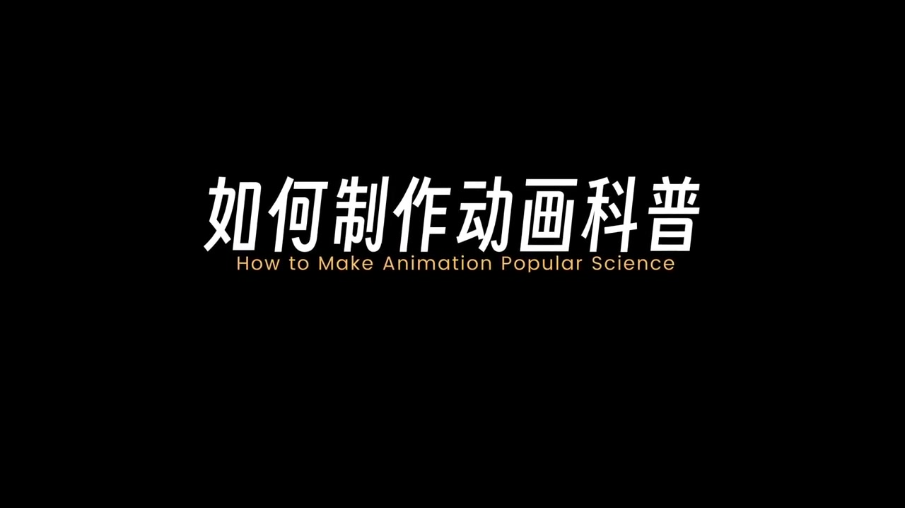
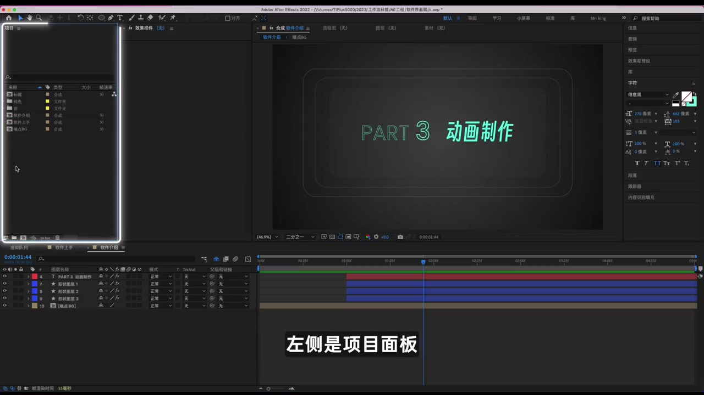
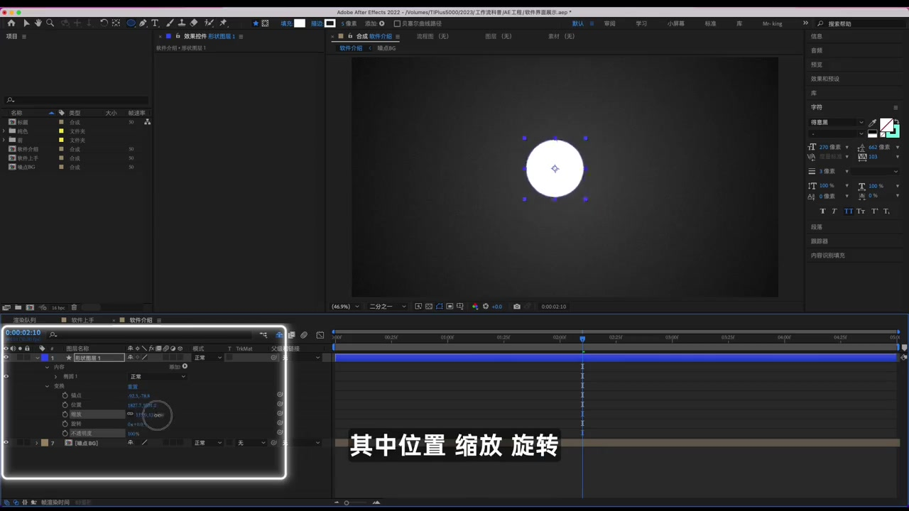
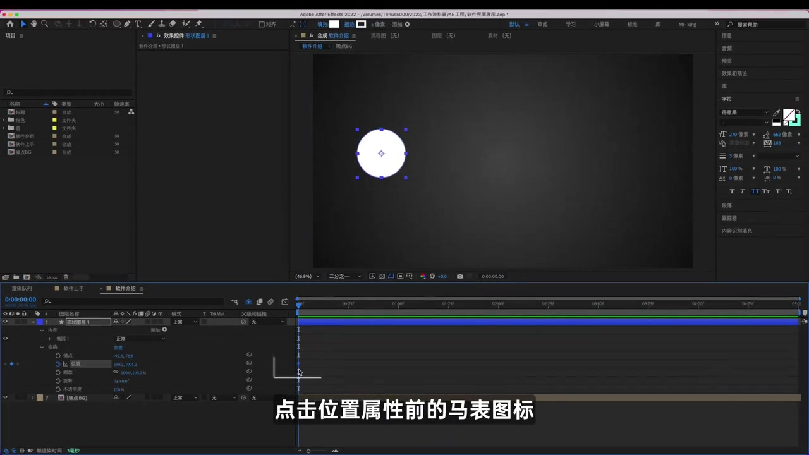
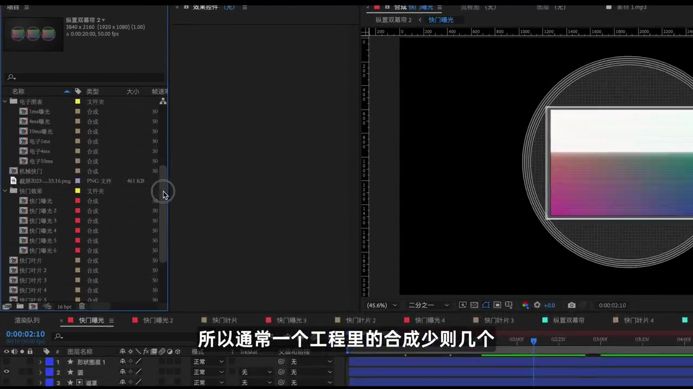
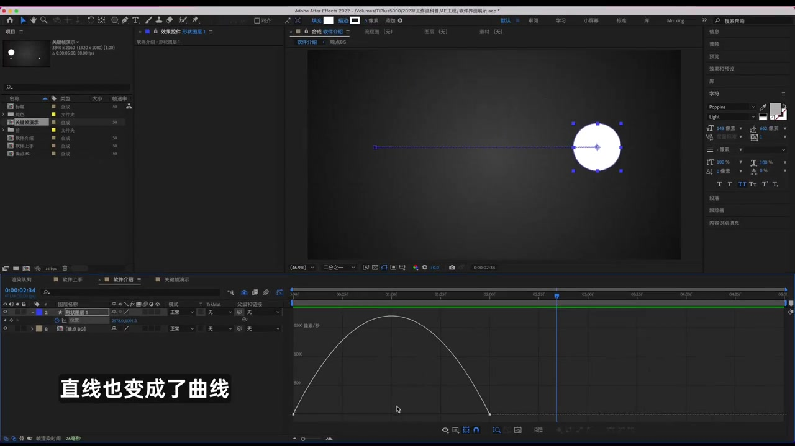
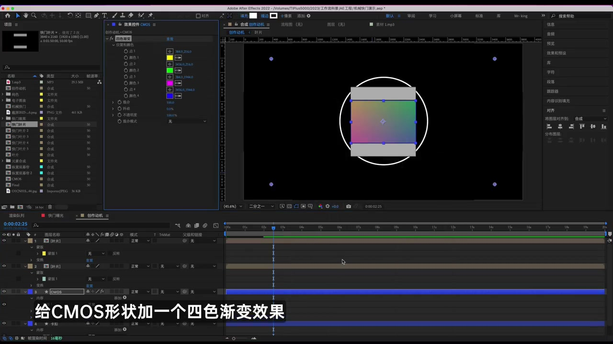
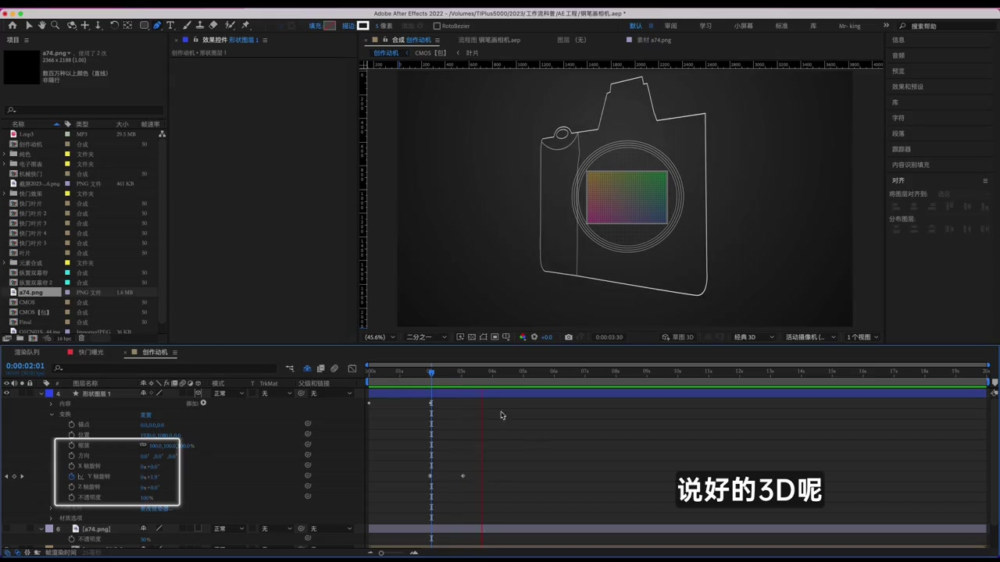

01
中文
MG动画就是让图形动起来。
EN
Motion graphics simply make shapes move.
表达提示motion graphics（MG动画）

Scene English · 动画 · After Effects
How to Make Science Explainers in Motion
🎧 语音讲解
Motion Graphics: Make Shapes Move
情境动画类型属于MG动画，可以简单理解为让图形动起来。无论什么形状，单一元素还是复合形态，都可以看作是图形。图形不能理解？那它们到底是如何动起来的呢？很简单，关键帧。关键帧是动画最基础的运行逻辑，也是最容易让人劝退的部分。
MG动画就是让图形动起来。
Motion graphics simply make shapes move.
表达提示motion graphics（MG动画）
关键帧是动画最基础的运行逻辑。
Keyframes are the core logic of animation.
表达提示keyframe（关键帧）
它也是最容易让人劝退的部分。
And the part that scares people off most.
表达提示scare off（劝退）
motion graphics（MG动画
keyframe（关键帧

First Steps in the AE Interface
情境来到软件界面：左侧是项目面板，在这里可以管理所有的文件，也能导入素材；右侧这个是实时监看面板，叫做合成窗口；上面一般是工具栏；最下面是合成的时间线窗口，这是最主要的操作区域，绝大部分的操作都可以在这里进行。
左侧项目面板管理文件和素材。
The project panel on the left manages files and imports.
表达提示project panel（项目面板）
右侧是合成窗口，实时监看。
The comp window on the right previews live.
表达提示comp window（合成窗口）
最下面是时间线，主操作区。
The timeline below is the main workspace.
表达提示timeline（时间线）
project panel（项目面板
comp window（合成窗口

Creating Layers and Transform
情境点击鼠标右键可以新建最基本的元素：文字、形状图层，也可以在工具栏选择相应的工具在合成窗口直接操作。我们新建一个形状，展开它的变换参数，里面有五个选项，试着调整一下这些参数，能看到图形会随之产生变化。其中位置、缩放、旋转，是影响运动的三个关键参数。
右键可新建文字和形状图层。
Right-click to add text and shape layers.
表达提示shape layer（形状图层）
变换参数里，位置/缩放/旋转影响运动。
Of the transform options, position, scale and rotation drive motion.
表达提示transform（变换）
shape layer（形状图层
transform（变换

Keyframe Animation
情境先来做一个简单的位移动画：把图形放在左侧，拖动时间线到起始处，点击位置属性前的码表图标，此时就完成了一个关键帧的记录；之后拖动时间线至两秒处，再改变一下图形的位置，这样就会在当前状态自动生成一个关键帧。预览一下，一个简单的位移动画就完成了。关键帧其实就是记录画面元素在不同时间下的不同状态，这也是动画最基本的运行逻辑。
点击码表图标记录起始关键帧。
Click the stopwatch to record the first keyframe.
表达提示stopwatch（码表）
两秒处改变位置，自动生成第二个关键帧。
Move the shape at two seconds to auto-add the second keyframe.
表达提示auto-add（自动生成）
关键帧=元素在不同时间的不同状态。
Keyframes capture states across time.
表达提示capture（记录）
stopwatch（码表
auto-add（自动生成

Speed Curves for Smooth Motion
情境为什么动画看起来还不够流畅？因为现在它还是线性运动。选出这两个关键帧，打开图表编辑器，选择编辑速度图表：这个图表的横向代表时间，纵向表示速率。能看到它还是一条直线，也就说明运动的运动速度是一致的，运动起来自然也就平平无奇。按F9键，菱形关键帧变成了沙漏形状，再次回到图表编辑器，直线也变成了曲线。高的部分表示运动更快，低的部分则更慢。想要由快到慢就可以左高右低，而用慢变快则可以左低右高。
线性运动让动画平平无奇。
Linear motion makes animation feel flat.
表达提示linear（线性的）
按F9，直线关键帧变成曲线。
Hit F9 and the straight frames turn to curves.
表达提示ease（缓动）
曲线高=快、低=慢，可自由塑造节奏。
High curve is fast, low is slow—shape your rhythm.
表达提示rhythm（节奏）
关键帧让画面动，速度曲线让画面丝滑。
Keyframes move it; curves make it silky.
表达提示silky（丝滑）
linear（线性的
ease（缓动

Find the Core Idea
情境有些朋友会说软件操作我都会，可是一旦开始创作就无从下手，那可能是因为你还没有找到创作的核心动机。以快门这期视频为例，其实核心动机就是有快门形态。我们可以先想象快门的组成部分，然后用最基础的形状把它描绘出来：一个长方形的CMOS，一个圆形的相机卡口，再用四个长方形拼出快门叶片。想让快门动起来，就可以用关键帧记录一下每个叶片起始和结束的位置。
会操作但不会创作，是缺核心动机。
Knowing the tools but not the why? Find the core idea.
表达提示core idea（核心动机）
用最基础的形状描绘主题。
Sketch the subject with the simplest shapes.
表达提示sketch（描绘）
关键帧记录每个叶片的起止位置。
Keyframe each blade's start and end.
表达提示blade（叶片）
core idea（核心动机
sketch（描绘

Effects and Path Animation
情境AE最重要的一个部分：效果。给CMOS形状加上一个四色渐变效果，调整颜色分布，再添加一个网格效果，就能得到一个更符合直觉的CMOS画面。还可以做相机生长动画：用钢笔工具进行绘制，完成之后添加修剪路径效果，打上关键帧，让图形的线条路径从0%到最后100%依次展现，这样一个路径生长动画就完成了。
效果可以叠加，实现丰富视觉表现。
Stack effects to enrich the visuals.
表达提示stack（叠加）
四色渐变加网格，CMOS更有直觉。
Gradient plus grid makes the CMOS intuitive.
表达提示gradient（渐变）
钢笔绘制+修剪路径关键帧=路径生长动画。
Pen + trim paths keyframed gives a growing-line animation.
表达提示trim path（修剪路径）
stack（叠加
gradient（渐变

Fake 3D in a 2D App
情境打开3D开关旋转一下，说好的3D呢？虽然可以通过插件或渲染器实现一些3D效果，但AE本质上还是一个2D软件。想在二维中实现3D效果还可以耍点小心机：这个动画其实就是相机旋转到不同的形态时，给它做出对应的轮廓线条，在轮廓变化的起始、中间和结束状态分别打上关键帧，再适当调整一下，一个障眼法的3D效果就出来了。
AE本质是2D软件。
After Effects is fundamentally 2D.
表达提示fundamentally（本质上）
旋转到不同形态，配对应轮廓线条。
Rotate the form and draw matching outline lines.
表达提示outline（轮廓）
起止和中间打关键帧，就是伪3D。
Keyframe start, middle and end—that's fake 3D.
表达提示fake 3D（伪3D）
fundamentally（本质上
outline（轮廓
Scripts and Plugins
情境除了基础软件操作，还需要了解AE的拓展工具，也就是常听到的插件脚本。脚本通常体积小巧，它可以通过代码来控制AE现有的功能，让操作更为便捷。而插件则会复杂一些，是为了拓展AE的边界，让原本实现不了或很难实现的效果能更容易制作出来，比如这一类粒子插件和3D插件。
脚本用代码控制AE现有功能。
Scripts drive existing AE features via code.
表达提示script（脚本）
插件拓展AE的边界。
Plugins push the boundaries of AE.
表达提示plugin（插件）
粒子插件和3D插件让特效更易实现。
Particle and 3D plugins make effects much easier.
表达提示particle（粒子）
script（脚本
plugin（插件
Why Animate Science
情境用动画来制作科普的目的，就是为了让一些晦涩难懂的文字表述，以可视化的形态展现，它的优势就是直观明了。但它归根结底也只是一种表现形式，而科普内容本身才是核心，你要做的是锦上添花，而非纸上添花。
动画科普把晦涩文字可视化。
Animated explainers turn dense text into visuals.
表达提示visualize（可视化）
它的优势是直观明了。
Its strength is clarity at a glance.
表达提示clarity（直观）
动画只是形式，内容才是核心，做锦上添花。
Animation is a vessel; the content is the core.
表达提示vessel（载体）
visualize（可视化
clarity（直观
说MG动画本质
说关键帧
说速度曲线
说核心动机
说脚本与插件
先搭结构和运动，再上效果。
线性运动很生硬。
AE本质是2D软件。
脚本控制现有功能，插件扩展边界。
分开制作便于管理。
没有核心动机就无从下手。